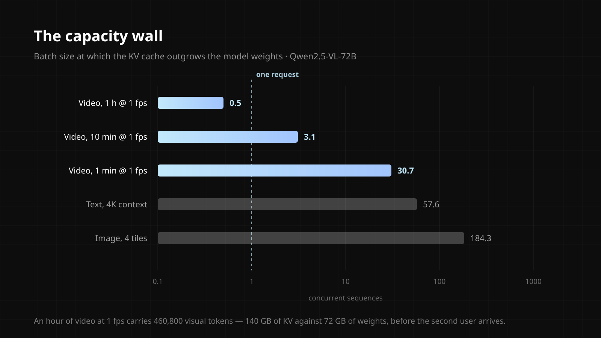

The Capacity Wall
Serving a video vision-language model is not slow because the GPU runs out of bandwidth. It is slow because the same memory holds far less useful work. A GPU amortises the cost of reading model weights across everyone in the batch; it cannot do that for the KV cache, because the cache is private to each sequence. In text serving that only bites at large batch sizes. In video serving it bites immediately, because one request arrives carrying an enormous visual prefix.
On Qwen2.5-VL-72B geometry, an hour of video at one frame per second is 460,800 visual tokens — 140 GB of KV cache against 72 GB of weights, before a second user shows up. Work it through on an 8×H100 node and the shape of the problem is clear: step time is 25.6 ms in every scenario and each user still sees about 39 tokens per second. Nothing got slower. Only aggregate throughput collapses, by 113×, because the node is holding four conversations where it used to hold 454. That is a capacity limit, not a bandwidth limit, and the difference matters: adding bandwidth does not help, while adding capacity multiplies useful work directly.
The limitations are worth stating before anyone else does. This is an analytical model derived from model geometry and token counts, not a measurement against instrumented inference. It does not model KV compression by default, and compression is the serious counterargument — under an aggressive scheme that one-hour video falls to roughly 7 GB and fits comfortably. The argument survives in a narrower regime: high resolution, real frame rates, continuous streaming, multi-tenant serving, where compression reduces less than concurrency multiplies. Prefill is out of scope; this concerns decode.
What makes it interesting rather than merely inconvenient is that the visual KV cache is largely a static prefix. Its size is known the moment prefill finishes, it does not grow, and it is reusable across requests about the same video. That removes most of the dynamic-mapping problem that makes text models awkward for processing-in-memory — which suggests video serving is a better fit for a dedicated near-memory KV tier than text serving ever was.
Services
Research, Performance Modelling
Stack
Python, no dependencies
Status
Analytical model, open for scrutiny
Year
2026
Code
vlm-kv-capacity

Other Project
WMF Benchmark